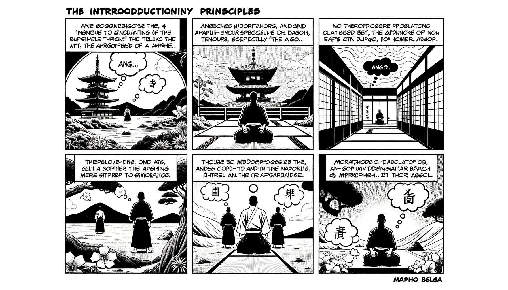

七十五巻 巻一覧
正法眼藏第72 安居
本ページは各巻の紹介ページです。tools/gen_web_volumes.py が doc/正法眼蔵.txt から要点の短い抜粋を載せています（全文の引用ではありません）。
出典（原文）: https://shomonji.or.jp/zazen/doc/genzou.html
原文・現代語訳の全文は 全文ページを参照してください。
この巻の紹介（概要）
道元『正法眼蔵』七十五巻の第72篇「安居」です。禅籍・経典への引用や語の行間が重なりやすいので、一度ですべてを要約に還元しない読み方を推奨します。問答 Bot では巻スコープにこの題名を含めると応答が安定しやすいことがあります。
語彙の足場
- 題名語：巻題「安居」は、道元が本章で特に扱う論点の看板です。辞書義だけに固定せず、原文中の用例で意味を確かめます。
- 引用と典故：公案・経文の引用は、一字一句の照応（何に答えているか）を押さえると全体が見えやすくなります。
- 学び方：抜粋だけでも音読し、分からない箇所は印を付けて後から問うとよいです。
原文（要点の抜粋）
当巻の冒頭付近からの短い抜粋です。長い引用は載せていません。全文は全文ページを参照してください。出典はリポジトリ内 doc/正法眼蔵.txt です。原文の参照元: https://shomonji.or.jp/zazen/doc/genzou.html
先師天童古佛、結夏小參云、平地起骨堆、虛空剜窟籠。驀透兩重關、拈却黒漆桶（先師天童古佛、結夏の小參に云く、平地に骨堆を起し、虛空に窟籠を剜る。驀に兩重の關を透すれば、黒漆桶を拈却せり）。
しかあれば、得遮巴鼻子了、未免喫飯伸脚睡、在這裏三十年（遮の巴鼻子を得ぬれば、未だ免れず飯を喫しては脚を伸べて睡り、這裏に在つて三十年することを）なり。すでにかくのごとくなるゆゑに、打併調度、いとまゆるくせず。その調度に九夏安居あり。これ佛佛祖祖の頂𩕳面目なり。皮肉骨髓に親曾しきたれり。佛祖の眼睛頂𩕳を拈來して、九夏の日月とせり。安居一枚、すなはち佛佛祖祖と喚作せるものなり。
安居の頭尾、これ佛祖なり。このほかさらに寸土なし、大地なし。夏安居の一橛、これ新にあらず舊にあらず、來にあらず去にあらず。その量は拳頭量なり、その樣は巴鼻樣なり。しかあれども、結夏のゆゑにきたる、虛空塞破せり、あまれる十方あらず。解夏のゆゑにさる、迊地を裂破す、のこれる寸土あらず。このゆゑに結夏の公案現成する、きたるに相似なり。解夏の籮籠打破する、さるに相似なり。かくのごとくなれども、親曾の面面ともに結解を罣礙するのみなり。萬里無寸草なり、還吾九十日飯錢來（吾れに九十日の飯錢を還し來れ）なり。
黄檗死心和尚云、山僧行脚三十餘年、以九十日爲一夏。増一日也不得、減一日也不得（黄檗死心和尚云く、山僧行脚すること三十餘年、九十日を以て一夏と爲す。一日を増すこと也た不得なり、一日を減ずること也た不得なり）。
しかあれば、三十餘年の行脚眼、わづかに見徹するところ、九十日爲一夏安居のみなり。たとひ増一日せんとすとも、九十日かへりきたりて競頭參すべし。たとひ減一日せんとすといふとも、九十日かへりきたりて競頭參するものなり。さらに九十日の窟籠を跳脱すべからず。この跳脱は、九十日の窟籠を手脚として𨁝跳するのみなり。九十日爲一夏は、我箇裏の調度なりといへども、佛祖のみづからはじめてなせるにあらざるがゆゑに、佛佛祖祖、嫡嫡正稟して今日にいたれり。
しかあれば、夏安居にあふは諸佛諸祖にあふなり。夏安居にあふは見佛見祖なり。夏安居ひさしく作佛祖せるなり。この九十日爲一夏、その時量たとひ頂𩕳量なりといへども、一劫十劫のみにあらず、百千無量劫のみにあらざるなり。餘時は百千無量等の劫波に使得せらる、九十日は百千無量等の劫波を使得するゆゑに、無量劫波たとひ九十日にあふて見佛すとも、九十日かならずしも劫波にかかはれず。
しかあれば參學すべし、九十日爲一夏は眼睛量なるのみなり。身心安居者それまたかくのごとし。夏安居の活鱍鱍地を使得し、夏安居の活鱍鱍地を跳脱せる、來處あり、職由ありといへども、他方他時よりきたりうつれるにあらず、當處當時より起興するにあらず。來處を把定すれば九十日たちまちにきたる、職由を摸索すれば九十日たちまちにきたる。凡聖これを窟宅とせり、命根とせりといへども、はるかに凡聖の境界を超越せり。思量分別のおよぶところにあらず、不思量分別のおよぶところにあらず、思量不思量の不及のみにあらず。
世尊在摩竭陀國、爲衆説法。是時將欲白夏、乃謂阿難曰、諸大弟子、人天四衆、我常説法、不生敬仰。我今入因沙臼室中、坐夏九旬。忽有人、來問法之時、汝代爲我説、一切法不生、一切法不滅（世尊、摩竭陀國に在して衆の爲に説法したまふ。是の時まさに白夏せんとしたまひて、乃ち阿難に謂つて曰はく、諸大弟子、人天四衆、我れ常に説法すれども敬仰を生ぜず。我れ今因沙臼室中に入つて坐夏九旬すべし。忽ちに人有り、來つて法を問はん時、汝代つて我が爲に説くべし、一切法不生、一切法不滅と）。
言訖掩室而坐（言ひ訖つて掩室して坐したまふ）。
しかありしよりこのかた、すでに二千一百九十四年［當日本寛元三年乙巳歳］なり。堂奥にいらざる兒孫、おほく摩竭掩室を無言説の證據とせり。いま邪黨おもはくは、掩室坐夏の佛意は、それ言説をもちゐるはことごとく實にあらず、善巧方便なり。至理は言語道斷し、心行處滅なり。このゆゑに、無言無心は至理にかなふべし、有言有念は非理なり。このゆゑに、掩室坐夏九旬のあひだ、人跡を斷絶せるなりとのみいひいふなり。これらのともがらのいふところ、おほきに世尊の佛意に孤負せり。
いはゆる、もし言語道斷、心行處滅を論ぜば、一切の治生産業みな言語道斷し、心行處滅なり。言語道斷とは、一切の言語をいふ。心行處滅とは、一切の心行をいふ。いはんやこの因緣、もとより無言をたうとびんためにはあらず。通身ひとへに泥水し入草して、説法度人いまだのがれず、轉法拯物いまだのがれざるのみなり。もし兒孫と稱ずるともがら、坐夏九旬を無言説なりといはば、還吾九旬坐夏來（吾れに九旬坐夏を還し來るべし）といふべし。
阿難に敕令していはく、汝代爲我説、一切法不生、一切法不滅と代説せしむ。この佛儀、いたづらにすごすべからず。おほよそ、掩室坐夏、いかでか無言無説なりとせん。しばらく、もし阿難として當時すなはち世尊に白すべし、一切法不生、一切法不滅。作麼生説。縱説恁麼、要作什麼（一切法不生、一切法不滅。作麼生か説かん。縱ひ恁麼に説くも、什麼を作すことをか要せん）。かくのごとく白して、世尊の道を聽取すべし。
図解（4コマ・AI生成）
教義の根拠は原文・出典に従い、漫画は比喩の補助に留めてください。

深掘り（読解のコツ）
- 道元文は定義の羅列に見えても、多くの場合誤解への遮断と正伝の姿勢が背骨になっています。
- 「当体」「現成」「即」などの語が出たら、その巻独自の差別相にどう接続しているかをメモしておくとよいです。